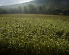
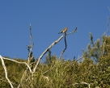
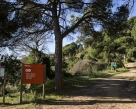

Parque del Montnegre

Bosques cerca del mar. El parque destaca por los espléndidos pinares de pino piñonero de la vertiente litoral, que se transforman en encinares, robledos y alcornocales hacia el interior del macizo. Los dólmenes neolíticos, los restos ibéricos
y las iglesias medievales se insertan en un paisaje diverso de cultivos, bosques y masías, producto de los usos agroforestales de los últimos siglos.
Inicio
Parc Cordillera de Marina

Una tierra antigua y viva. Envuelto por grandes núcleos urbanos, cumple un papel fundamental como espacio verde, educativo y de ocio dentro del área metropolitana. Pese a esta presión humana, el parque presenta una fauna y una vegetación notables
y conserva un rico patrimonio histórico, del cual destacan poblados ibéricos, monasterios y masías.
Inicio
Parque el Corredor

Cerros entre la plana y el mar. Constituido por tres unidades –la Conreria, Sant Mateu y Céllecs–, el parque tiene un papel ecológico fundamental porqué pone en contacto el litoral con las valles interiores. Un clima mediterráneo y la situación
estratégica que presenta han hecho que el hombre se establezca desde bien antiguo; dólmenes, restos ibéricos, ermitas
Inicio